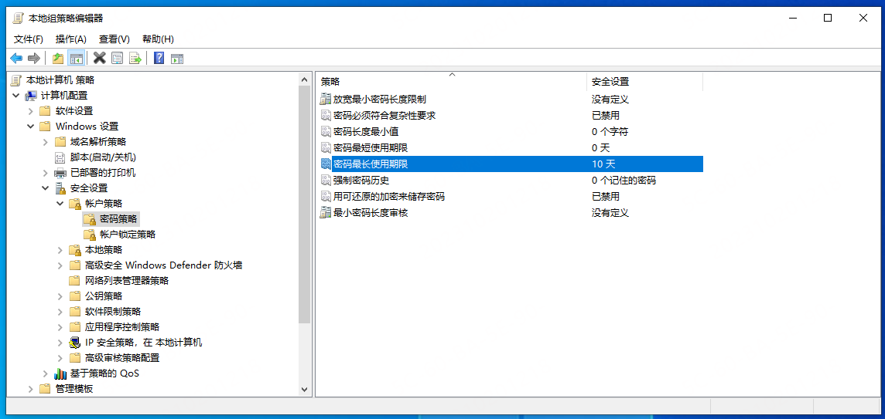

概述: 组策略-密码策略说明
0x01 密码策略如下图所示：

)0x02 详细说明
1 放宽最小密码长度限制
2 密码必须符合复杂性要求
3 密码长度最小值
4 密码最短使用期限
5 密码最长使用期限
注册表：
6 强制密码历史
7 用户可还原的加密来存储密码
8 最小密码长度审核
相关API
用NetUser函数修改密码策略
可以使用 NetUserModalsGet 来查询密码策略，最后需要使用 NetApiBufferFree 来释放
查询到的数据空间。还可以使用 NetUserModalsSet 可以对密码策略进行设定。
NET_API_STATUS NetUserModalsGet(
_In_opt_ LPCWSTR servername,
_In_ DWORD level,
_Out_ LPBYTE *bufptr
); // 查询密码策略NET_API_STATUS NetApiBufferFree(
_In_ LPVOID Buffer
); // 释放查询的数据空间NET_API_STATUS NetUserModalsSet(
_In_ LPCWSTR servername,
_In_ DWORD level,
_In_ LPBYTE buf,
_Out_ LPDWORD parm_err
); // 设定密码策略这两个函数中 level 参数决定了要处理数据的类型，可以取值的内容为
| Value | Meaning | Structure |
|---|---|---|
| 0 | Specifies global password parameters. | USER_MODALS_INFO_0 |
| 1 | Specifies logon server and domain controller information. | USER_MODALS_INFO_1 |
| 2 | Specifies the domain name and identifier. | USER_MODALS_INFO_2 |
| 3 | Specifies lockout information. | USER_MODALS_INFO_3 |
| 1001 | Specifies the minimum allowable password length. | USER_MODALS_INFO_1001 |
| 1002 | Specifies the maximum allowable password age. | USER_MODALS_INFO_1002 |
| 1003 | Specifies the minimum allowable password age. | USER_MODALS_INFO_1003 |
| 1004 | Specifies forced logoff information. | USER_MODALS_INFO_1004 |
| 1005 | Specifies the length of the password history. | USER_MODALS_INFO_1005 |
| 1006 | Specifies the role of the logon server. | USER_MODALS_INFO_1006 |
| 1007 | Specifies domain controller information. | USER_MODALS_INFO_1007 |
如下是使用 NetUserModalsGet 查询时，我们关注的结构体信息
typedef struct _USER_MODALS_INFO_0 {
DWORD usrmod0_min_passwd_len; // 密码长度最小值
DWORD usrmod0_max_passwd_age; // 密码最长使用期限(秒)
DWORD usrmod0_min_passwd_age; // 密码最短使用期限(秒)
DWORD usrmod0_force_logoff; // 过期后强制注销的期限(秒)
DWORD usrmod0_password_hist_len; // 强制密码历史个数
} USER_MODALS_INFO_0, *PUSER_MODALS_INFO_0, *LPUSER_MODALS_INFO_0;
typedef struct _USER_MODALS_INFO_3 {
DWORD usrmod3_lockout_duration; // 账户锁定时间(秒)
DWORD usrmod3_lockout_observation_window; // 重置账户锁定计数器(秒)
DWORD usrmod3_lockout_threshold; // 账户锁定阈值
} USER_MODALS_INFO_3, *PUSER_MODALS_INFO_3, *LPUSER_MODALS_INFO_3;使用 NetUserModalsSet 除了以上结构体进行整体设置外，还可以对部分参数进行单独设置
typedef struct _USER_MODALS_INFO_1001 {
DWORD usrmod1001_min_passwd_len; // 密码长度最小值
} USER_MODALS_INFO_1001, *PUSER_MODALS_INFO_1001, *LPUSER_MODALS_INFO_1001;
typedef struct _USER_MODALS_INFO_1002 {
DWORD usrmod1002_max_passwd_age; // 密码最长使用期限(秒)
} USER_MODALS_INFO_1002, *PUSER_MODALS_INFO_1002, *LPUSER_MODALS_INFO_1002;
typedef struct _USER_MODALS_INFO_1003 {
DWORD usrmod1003_min_passwd_age; // 密码最短使用期限(秒)
} USER_MODALS_INFO_1003, *PUSER_MODALS_INFO_1003, *LPUSER_MODALS_INFO_1003;
typedef struct _USER_MODALS_INFO_1004 {
DWORD usrmod1004_force_logoff; // 过期后强制注销的期限(秒)
} USER_MODALS_INFO_1004, *PUSER_MODALS_INFO_1004, *LPUSER_MODALS_INFO_1004;
typedef struct _USER_MODALS_INFO_1005 {
DWORD usrmod1005_password_hist_len; // 强制密码历史个数
} USER_MODALS_INFO_1005, *PUSER_MODALS_INFO_1005, *LPUSER_MODALS_INFO_1005;密码复杂度的处理
看到这里是不是发现一个问题，那就是 密码必须符合复杂性要求 这项配置，查询不到。
我们可以通过直接读取 SAM 注册表的信息，来判断密码复杂度是否启用
BOOL CheckPwdComplexPolicy()
{
HKEY hKey = NULL;
// 打开密码策略注册表
LONG lResult = RegOpenKeyEx(HKEY_LOCAL_MACHINE,
"SAM\\SAM\\Domains\\Account", 0, KEY_ALL_ACCESS, &hKey);
if (lResult != ERROR_SUCCESS) return FALSE;
// 读取密码策略注册表信息
DWORD dwLen = 1024;
BYTE pBuf[1024] = { 0 };
lResult = RegQueryValueEx(hKey, "F", NULL, NULL, pBuf, &dwLen);
RegCloseKey(hKey);
if (lResult != ERROR_SUCCESS) return FALSE;
// 检查密码复杂度是否启用
if (pBuf[76] != 1) return FALSE; // 复杂度(0未启用)(1已启用)
// if (pBuf[80] < 8) return FALSE; // 最小长度
return TRUE;
}普通情况下 SAM 注册表是不允许访问的，就需要我们首先修改一下访问 SAM 的权限
BOOL ModifySamRegPrivilege()
{
PACL pOldDacl = NULL;
PSECURITY_DESCRIPTOR pSID = NULL;
// 获取SAM主键的DACL
DWORD dRet = GetNamedSecurityInfo("MACHINE\\SAM\\SAM",
SE_REGISTRY_KEY, DACL_SECURITY_INFORMATION, NULL, NULL, &pOldDacl, NULL, &pSID);
if (dRet != ERROR_SUCCESS)
{
LocalFree(pSID);
return FALSE;
}
// 创建一个ACE,允许Administrators组成员完全控制对象,并允许子对象继承此权限
EXPLICIT_ACCESS_A eia = { 0 };
BuildExplicitAccessWithName(&eia, "Administrators",
KEY_ALL_ACCESS, SET_ACCESS, SUB_CONTAINERS_AND_OBJECTS_INHERIT);
// 将新的ACE加入DACL
PACL pNewDacl = NULL;
dRet = SetEntriesInAcl(1, &eia, pOldDacl, &pNewDacl);
if (dRet != ERROR_SUCCESS)
{
LocalFree(pSID);
return FALSE;
}
// 更新SAM主键的DACL
dRet = SetNamedSecurityInfo("MACHINE\\SAM\\SAM",
SE_REGISTRY_KEY, DACL_SECURITY_INFORMATION, NULL, NULL, pNewDacl, NULL);
if (dRet != ERROR_SUCCESS)
{
LocalFree(pNewDacl);
LocalFree(pSID);
return FALSE;
}
return TRUE;
}